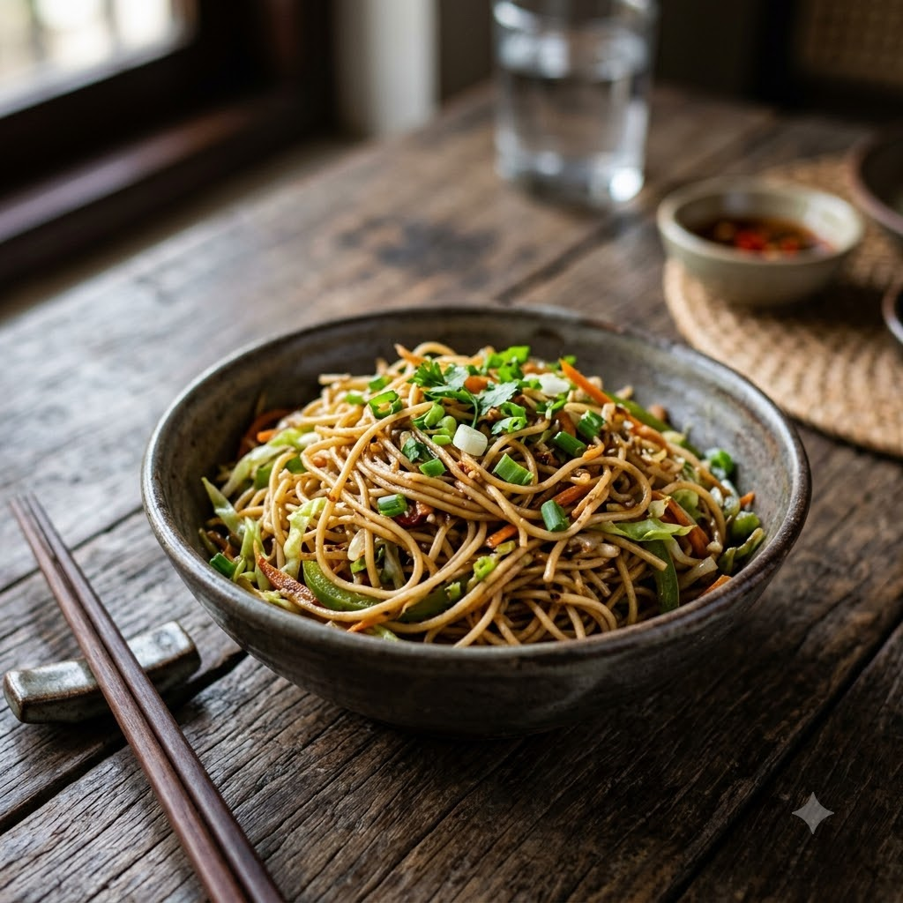

Chef Magic – Boil then Sauté Auto 20 min — Serves 3
Prep ahead: Rinse the boiled noodles under cold water and toss with a little oil to stop them sticking together.
Ingredients
Method
Tip: High heat and quick tossing is what gives Hakka noodles their signature wok-charred flavour — don’t let them sit and